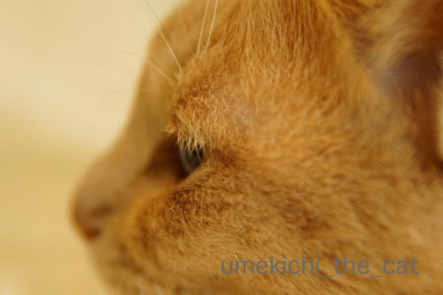
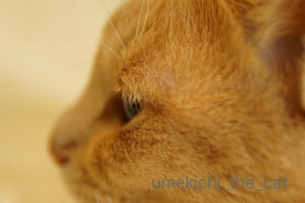

お膝猫が観測されております＾＾ [梅吉]
9月30日。午後３時ごろから雨がポツポツ降り始め
夕方５時を回る頃には窓に叩きつけるように強く降り出しました。
夜の８時半、和歌山県田辺市付近に台風24号が上陸したとニュースが流れた頃から
我が家付近も更に風雨が強まりました。が、21号ような恐怖は感じませんでした。
ただいま夜の10時を少し過ぎています。
雨風は強いですがピークは過ぎた感じ。今夜は早めに休もうと思っています。
以下の記事は予約投稿になります＾＾
〜追記〜
昨夜は真夜中過ぎまで風が強かったです。
今朝も台風の名残の風が吹いているようですが雨はすっかり上がりました。
我が家はベランダのゴミ箱が倒れたくらいで被害はありませんでした。
今回は関東で倒木などの被害が出ているようですね。
皆様のところは大丈夫でしょうか。
･゜ﾟ･*:.｡..｡.:*･゜ﾟ･*:.｡. .｡.:*･゜ﾟ･*･゜ﾟ･*:.｡..｡.:*･゜ﾟ･*:.｡..｡.:*･゜ﾟ･*
雨がちで思うように窓を開けられないこともあり家の中はムシッと暑い日も多いこの頃です。
人間は半袖で過ごしていますがどうやらにゃんこは体感温度が違う様でして・・・

最近すっかりお膝猫なんですよ。
おとーさんのお膝に乗ってうっとりしてますw

ぬくいですかー！！

![[猫]](https://blog.ss-blog.jp/_images_e/101.gif) ちろり
ちろり
夜も足の間or脇の下に挟まって密着して寝るようになってきました。
身動きが取れない。
最近寝違えたのはそのせいかしら・・・・・
にゃんこのまつ毛問題（笑）梅吉の横顔を撮ってみました。

（おっと撮影）

（おかーさん撮影）
判りにくいかな？
思い切りトリミングします。

（おっと撮影）
被毛が下がっているようにも見えますがまつ毛ですよね！？
改めて見るとそんなに長くは無いけど（あおくんと比べると特にw）密に生えてる感じ？
長いのも密なのも羨ましいです・・・
最近私のカメラがやけにハイキーに写るなぁと思っていたら
撮影モードがエフェクト入りになっていた様子w
なおしてもらいました(^_^;)
 ↑ガブッと一押し↑
↑ガブッと一押し↑
ほとんど人もおらずのんびりしたあぜ道をコスモスと彼岸花の共演を見ながら歩きます。
彼岸花を見ながら立ち寄ったのは九品寺（くほんじ）と葛城一言主（ひとことぬし）神社。
九品寺は駐車場があるので人がたくさん。
（前々回記事で真っ赤な絨毯みたいに彼岸花が咲いていたのは九品寺の裏手です）
早々に退散して葛城一言主神社へ。
葛城一言主神社は全国の一言主神社の総本社です。
（葛城一言主神社にも駐車場はありますが団体さんがいなかったせいか静かでした）
ここの神様は一言で願い事をすると叶えてくれるそう。
もちろんきっぱりとお願いしてきましたよ。
そしてその願いは他言してはいけないそうです。
秋の大祭にお勤めを果たしたのでしょうか。お獅子さんが祀られていました。
この神社の横の道、気？冷気？の通り道だったのかな。
とっても涼しくて心地よかったです。
神社を出て彼岸花を観賞しつつ国道の方へ下りました。
艶やかな彼岸花。
妖艶な彼岸花。
最後にシロバナの彼岸花も見ることができました＾＾
この葛城古道のルート、前々回記事にアップした「てくてくマップ」によると
バスで南に向かい「風の森」というバス停から金剛山＆葛城山の裾野を歩き
近鉄御所駅に戻ってくるルートで約10キロメートルとなっていますが
実際に歩くともっと距離があると思います。
私は地図で見ると３分の1くらいのルートしか歩いていない事になりますが
歩数計は10キロ近くなりました。
（国道に出た後は寺田橋だったかな？からバスに乗って近鉄御所駅まで戻りました）
アップダウンも結構あるのでもしも行って見たいなと思う方がいらっしゃいましたら
無理のない計画を立ててくださいね。
国道を通るバスは本数がすごく少ないので時刻表のチェックも忘れずに。
だったら車で回ろうかなと思われるかもしれませんが
ここは歩いてこそ色々発見のある楽しい道だと思います＾＾
最後に面白い地名。
櫛羅＝クジラという地域。
なんでも空海がこの地域にある滝が天竺のクジラの滝によく似ているのからこう名付けたんだとか。
夕方５時を回る頃には窓に叩きつけるように強く降り出しました。
夜の８時半、和歌山県田辺市付近に台風24号が上陸したとニュースが流れた頃から
我が家付近も更に風雨が強まりました。が、21号ような恐怖は感じませんでした。
ただいま夜の10時を少し過ぎています。
雨風は強いですがピークは過ぎた感じ。今夜は早めに休もうと思っています。
以下の記事は予約投稿になります＾＾
〜追記〜
昨夜は真夜中過ぎまで風が強かったです。
今朝も台風の名残の風が吹いているようですが雨はすっかり上がりました。
我が家はベランダのゴミ箱が倒れたくらいで被害はありませんでした。
今回は関東で倒木などの被害が出ているようですね。
皆様のところは大丈夫でしょうか。
･゜ﾟ･*:.｡..｡.:*･゜ﾟ･*:.｡. .｡.:*･゜ﾟ･*･゜ﾟ･*:.｡..｡.:*･゜ﾟ･*:.｡..｡.:*･゜ﾟ･*
雨がちで思うように窓を開けられないこともあり家の中はムシッと暑い日も多いこの頃です。
人間は半袖で過ごしていますがどうやらにゃんこは体感温度が違う様でして・・・
最近すっかりお膝猫なんですよ。
おとーさんのお膝に乗ってうっとりしてますw
ぬくいですかー！！
夜も足の間or脇の下に挟まって密着して寝るようになってきました。
身動きが取れない。
最近寝違えたのはそのせいかしら・・・・・
にゃんこのまつ毛問題（笑）梅吉の横顔を撮ってみました。
（おっと撮影）
（おかーさん撮影）
判りにくいかな？
思い切りトリミングします。

（おっと撮影）
被毛が下がっているようにも見えますがまつ毛ですよね！？
改めて見るとそんなに長くは無いけど（あおくんと比べると特にw）密に生えてる感じ？
長いのも密なのも羨ましいです・・・
最近私のカメラがやけにハイキーに写るなぁと思っていたら
撮影モードがエフェクト入りになっていた様子w
なおしてもらいました(^_^;)
ほとんど人もおらずのんびりしたあぜ道をコスモスと彼岸花の共演を見ながら歩きます。
彼岸花を見ながら立ち寄ったのは九品寺（くほんじ）と葛城一言主（ひとことぬし）神社。
九品寺は駐車場があるので人がたくさん。
（前々回記事で真っ赤な絨毯みたいに彼岸花が咲いていたのは九品寺の裏手です）
早々に退散して葛城一言主神社へ。
葛城一言主神社は全国の一言主神社の総本社です。
（葛城一言主神社にも駐車場はありますが団体さんがいなかったせいか静かでした）
ここの神様は一言で願い事をすると叶えてくれるそう。
もちろんきっぱりとお願いしてきましたよ。
そしてその願いは他言してはいけないそうです。
秋の大祭にお勤めを果たしたのでしょうか。お獅子さんが祀られていました。
この神社の横の道、気？冷気？の通り道だったのかな。
とっても涼しくて心地よかったです。
神社を出て彼岸花を観賞しつつ国道の方へ下りました。
艶やかな彼岸花。
妖艶な彼岸花。
最後にシロバナの彼岸花も見ることができました＾＾
この葛城古道のルート、前々回記事にアップした「てくてくマップ」によると
バスで南に向かい「風の森」というバス停から金剛山＆葛城山の裾野を歩き
近鉄御所駅に戻ってくるルートで約10キロメートルとなっていますが
実際に歩くともっと距離があると思います。
私は地図で見ると３分の1くらいのルートしか歩いていない事になりますが
歩数計は10キロ近くなりました。
（国道に出た後は寺田橋だったかな？からバスに乗って近鉄御所駅まで戻りました）
アップダウンも結構あるのでもしも行って見たいなと思う方がいらっしゃいましたら
無理のない計画を立ててくださいね。
国道を通るバスは本数がすごく少ないので時刻表のチェックも忘れずに。
だったら車で回ろうかなと思われるかもしれませんが
ここは歩いてこそ色々発見のある楽しい道だと思います＾＾
最後に面白い地名。
櫛羅＝クジラという地域。
なんでも空海がこの地域にある滝が天竺のクジラの滝によく似ているのからこう名付けたんだとか。

カフェオレ色の梅吉

梅吉 2023年8月10日 永眠


梅吉と出会った譲渡会

犬猫の理由なき殺処分ゼロ
妄想広告
UMEKICHI 光

爆発的に早い！
時々攻撃的！
Thanks to Mr.Boss365
爆発的に早い！
時々攻撃的！
Thanks to Mr.Boss365

梅吉さんお膝の上で腕枕もしてもらってますね。まつげのびっしりもびっくりしました。
一言主神社さんはうまく一言でお願いできないとだめなのかな。
by zombiekong (2018-10-01 01:30)
梅吉さん、膝の上でまったり気持ちいいね。
by ニコニコファイト (2018-10-01 06:46)
我が家にもお膝猫が出没してます。
もっと冷えてきたら膝の奪い合いに＾＾；
by ぽちの輔 (2018-10-01 07:02)
台風の被害がなく良かったです！
梅吉さん♪ 膝の上で至福の時(#^.^#)
この幸せな時間が続きますように♪
by きぃ (2018-10-01 07:57)
おはようございます。
お膝猫の梅吉君！！「ぬくい」もお仕事ですね！！小生猫にも「ぬくい」をお仕事を追加させます。梅吉君のまつ毛？確認しました。逆さまつ毛？かな。小生猫も観察しましたが、確認出来なかったです。一言主神社、興味深い祈願？システムです。総本山なら御利益ありそうです！？(=^･ｪ･^=)
PS.うさぎさん！！住吉大社の手水舎で水を振舞っている？
by Boss365 (2018-10-01 09:45)
お膝猫、うらやましい！
うちでは見られない光景だわ！(笑)
ぬくいの幸せだね、梅吉君^^
今回の台風でうちのマンション敷地内も木が倒れました。
ともだちの家も、隣の家の木が倒れてきて
彼女の家の電線にひっかかってるみたいで、どこに連絡すればいいのだ～って言ってました。
櫛羅って地名、なんかいいな。空海さん、センスあるよねｗ
by リュカ (2018-10-01 10:05)
日曜日のお昼寝が祟ったのか、寝たのは今朝の7時（笑）
ちぃさん地域、雨風が酷かったようですね。
我が家、今回は降っているのかどうかわからない程度でした。
まだ、ガラス戸も開けずにブログ巡りをしています。
今回はおとーさんのお膝でちろりというのが良いですね。
次、待っててや〜というところでしょうか？
おかーさんのことを気にしてくれてます？
梅吉さんの睫毛密集していますね。
羨ましい。
見つめる横顔が素敵です。
若い頃、睫毛が乾燥してポロポロこぼれ落ちてから、悲惨な状態です（笑）
家族は密集してたり、長かったりと卑怯ですよね（笑）
by kiki (2018-10-01 11:41)
ああっ・・・何と幸せそうな表情・・・こんなに愛されて何と幸せなお子・・・すべてのにゃんこがこんな表情ができたら・・・！！！
(｡-_-｡)ﾉ☆･ﾟ:*:ﾟ∟□∨Ε
by Ginger (2018-10-01 11:47)
いいな～いいな～膝のり梅吉さん♪
これ以上ない幸せなお顔、相思相愛間違いなしですね(#^^#)
ウチのは室温20℃切るぐらい冷えないと乗って来ません・・・はい、私の膝は単なるホカペでございますので・・・。
まつげ、私も必死でこてつの顔を見てますが、短くびっしりな感じでまつげなのか被毛なのか区別がつきません(^▽^;)
台風、前回と比べ物にならないくらい静かでした。
ほんの少しコースが違うだけでこんなに変わるのだと改めて認識。
こてつもず～っとぷーすか寝てました^^
by ゆきち (2018-10-01 12:32)
膝乗りにゃんこなんて羨まし過ぎます(^_^)v
うちのにゃんずは誰も膝乗りニャンコしてくれないんですよねぇ(*_*)
あっ、私だけでなくかみさんにもです→ここ大事ｗ
梅吉さんの幸せそうな表情が良いですねぇ(^-^)
うちのにゃんずがかみさんに抱っこされてるときの
顔と一緒です＾＾
by ニッキー (2018-10-01 13:13)
昨夜は、すんごい暴風でした！
どうせ、タイシタコトナインデショ……と高をくくっていたのですが、
どっこい、大したレベルでした。
窓、壊れるんじゃないの？という恐怖を感じたのは、ひさしぶりです。
何はともあれ、みなさん、大きな被害がなくってよかったです。
梅吉さんの、キャラメル色のまつ毛、セクスィーです！！
我が家はどうなんだろう？ 帰って、確かめてみよう♪
by morichan (2018-10-01 15:14)
我が家も息子の膝に乗るきなこが観測されました！！今シーズン初観測です！
梅吉君の横顔いいですねぇいったい何を見つめているのかしら～～(*^_^*)
by palpal (2018-10-01 15:50)
お膝猫たびたび観測☆うっとりしてますね～気持ちよさそうで可愛いーい＾＾
急に温度下がったりすると、お膝がちょうどいいのかもね。
梅吉さんのまつげ、あっ、上向きになってるのがまつげですよね？
いぜん友だちが、人間にあって猫に無いものは無いから猫のほうが偉いんじゃないかと言い出したことがあって～「下睫毛がない」と指摘したことがあります＾m＾；
櫛羅！ 思いもよらない命名～素敵ですね＾＾
by sana (2018-10-01 17:12)
猫にもマツゲがあるんですね。長く猫を飼っていましたが気にしたことがありませんでした。今度しょうちゃんを良く観察してみます。
梅吉さん、膝元でウットリですね～幸せそうです(^_^)
by kou (2018-10-01 19:04)
お膝にゃんこ♪表情がたまら～んです(*^-^*)
以前、ペットと一緒に寝ることで睡眠の質が落ちることはないと見たことがあります。
ただし１匹まで・・・私はあきらめました(^-^;
猫のまつ毛事情。あまり気にしたことなかったけど見てみる。
横顔の梅吉くんも可愛いにゃ～♪
by emi (2018-10-01 19:22)
zombiekongさん＞
腕枕、必ずご所望なんですよ・・・
膝から落ちないようにストッパーの役目もあるのか
無理無理な急角度でも顎を乗せようとしますw
まつ毛、スットコランドのみなにゃんはあるのかしらー！
いちごんさん（地元の方は一言主神社をこう呼ぶそうです）
には一言（ワンフレーズで）での願い事を、是非！！
ニコニコファイトさん＞
これからはお膝の季節です！
出がけに望まれると困ることもw
ぽちの輔さん＞
猫の絶対数が多いとそうなりますよねー＾＾
うちは猫の奪い合いかというとそうでもなく
（お膝は足がしびれるじゃないですかw）
どちらかというと譲り合いです（爆）
きぃさん＞
今回の台風は拍子抜けするほど何事もなく過ぎました。
梅吉もいつも通りでしたよ＾＾
梅吉が気持ちよくお膝が出来る環境や時間が
ず〜っと続いて欲しいです！！
Boss365さん＞
すももちゃんの「ぬくい」お仕事、もっふもふでひときわ暖かそうです＾＾
梅吉のまつげは写真ではちょっと伝わりにくいかもしませんが
被毛の色よりちょっぴり薄い色をしていて、下向きですw
逆さまつげ風ですが涙を流したりお目目が痛い感じはないので
ダイジョーブ、です( ´艸｀)
すみよっさんのうさぎさんは手水舎で頑張っている方と
撫で回される役目の方と（撫でうさぎ、病気を祓ってくれます）
おみくじをお届けする方と・・・大活躍です＾＾
（おみくじがうさぎの土人形の中に入ってます）
リュカさん＞
あら、あまえんぼあおくんもお膝には来ないのですね！
長毛洋猫さんはお膝でまったりってイメージはあまりないかも・・・
ポーズ取りながらクッションに寄りかかっているイメージよ＾＾
生木が倒れる風は経験済みなのでどれだけの強風だったかわかります！
マンション揺れなかった？
根っこが土の上に出てしまった様子は胸が痛みますよね・・・
お友達のところは停電はセーフだったのかな。
もう解決していると良いのだけれど。
kikiさん＞
あらら、お昼寝が過ぎましたかw
早いお時間にお風呂も済ませたと伺いましたので
ながーい1日だったのではないでしょうか。
今夜はゆっくりお休みくださいませm(_ _)m
お膝に関しては梅吉はおとーさんの方が好きなのですよw
おっとの方がお膝が大きいし、私はちょこちょこ立ち歩くので
落ち着かないようです。
約4.5キロの梅吉を膝に乗せっぱなしは足がしびれてくるので
おっとの方に行ってくれる方が実はありがたいのですw
私は夜の腕枕係で梅吉の温もりは堪能していますからー＾＾
ご家族のまつげは濃いめ！？それは羨ましいです！！
Gingerさん＞
これからは温さが心地よいのでしょうね＾＾
気持ちよさそうにくつろいでいましたよー！
トイレに行こうとして抱き上げるとガブッと抵抗してくるのも
面白愛おしいですよ(^_－)☆
ゆきちさん＞
こてつくんがお膝に来てくれるにはもう少し季節が進まないといけないですね！
シーズン初お膝の日、楽しみですねー＾＾
アメショ系は毛が密集しているからまつ毛が目立たないのでしょうか・・・
梅吉のは写真ではちょっとわかりにくいのですが
角度によってちゃんと「まつ毛やで」と主張する一軍があるのですよ(*>艸<)
こてつくんも角度によっては見えるかも！？
昨夜は我が家付近の方が雨風が強かったようですね。
やっぱり海に近い方が荒れるのかなぁ。
ニッキーさん＞
男性の方が膝が大きいし広いし体温の高めな方が多いので
（おっと、体温高めですw）
にゃんこのお膝の条件はそろっていると思います！
きっとニッキーさんのお膝を体験したら虜になってくれますよ＾＾
まずはお膝を味わっていただけるよう頑張れ、ニッキーさん！！
ああ、でもゴッドマザー様のお膝を堪能する
ニャンズさんを眺めるのも至福の時間ですね(^_－)☆
morichanさん＞
窓、壊れるんじゃないかと思ったなんて以前は大げさなと思いましたが
今はわかりますよー！
私も21号の時は窓割れる？というか窓枠外れる？？って思いました。。。
マンション揺れませんでしたか？
今朝は交通網も乱れて大変だったのではないでしょうか。
キャラメルカラーまつ毛は被毛の色よりも一段明るい色をしています。
角度によってはちゃんと「まつ毛やで」と主張してるんですよ＾＾
黒猫さんのまつ毛はちょっと白っぽいのを見たことがあります。
以外にもソフィーさんよりポポくんの方がバビッと長かったりしてwww
palpalさん＞
初観測は息子くん！？娘さんが悔しがってそうだわ〜。
男性の方が膝が広くて大きいから落ち着くのかしら・・・
うちのおっとは私よりも体温高いからホカペとしても優秀よ＾＾
梅吉はねー、しつこいカメラマンと目を合わさないように
無視しようと必死で違うほう向いてるんですよw
sanaさん＞
暑さが収まったなと思った途端にお膝猫でした！
待ち遠しかったのかしらw
夏の間は「おひざしたいわー、でもあついわー」なんて
思っていたのかもしれませんね＾＾
確かにニャンコには下まつげはないですよね。
他には・・・思いつきません。
sanaさん下まつげって指摘できるのがすごい☆
kouさん＞
私は２匹目に飼った猫で気づきましたよー、まつ毛＾＾
晩年はちょっと長めになっておじいちゃん感がたっぷりでしたよw
しょうちゃんのまつげはどんなのかな〜♪
emiさん＞
1匹までなら平気なんですね！emiさんの場合は・・・
２にゃんさんに場合によってはひなちゃんまりもちゃんまで
加わりそうだから大変そうです。。。
がんばれ！人気者のお母さん(≧▽≦)
くるみちゃんとタラくんのまつげはどんなのかしら＾＾
わんこもちゃんとまつげあるよね！
ニャンコよりはっきりしているかもねー。
by ちぃ (2018-10-01 21:04)
最近寒くなってきたので、梅吉さんお膝の上が恋しくなった乗せすね！
台風はなにも無く、過ぎ去っていきました(^^)
by ma2ma2 (2018-10-01 21:43)
お膝猫にずっと憧れています。
一応、ユキは5分くらいはお膝猫します。
それ以上が無理なんです。
ユキは、「しょうがないから付き合ってあげるね」みたいな(^^;
目標は10分以上なんです(^^)
by riverwalk (2018-10-01 22:11)
台風24号、こちらでは前回の21号よりも風が強かったです。
大規模な停電もあり、朝は信号機の点いていない所が有りました。
現在も停電がまだ復旧していない区域も有り、酷い台風でした。。。
気温が高くて暑い日でも猫さんの「温もり」はやっぱり別物ですよね。^^)
by yes_hama (2018-10-01 22:43)
お膝ネコ、羨ましい図だわ〜♪
台風、家壊れるかと思うくらい揺れました。
いつもとは違う風の音だった。怖かったです。
by nachic (2018-10-01 22:44)
東京は、都心部の方が被害が多かったみたい？
うちの方(市部)は、大した被害は無かったよ。
ぁっ、強風の音で眠れなかったけど、これも被害か？（ﾟ□ﾟ）
by 英ちゃん (2018-10-01 23:26)
台風すごかったですね。
本当にすごい勢いの風で、窓が弾けるかと思いました。
ミシっと強風が窓に当たるたびビクビクして、結果、寝不足です(｡-_-｡)
ねこにまつげ、ありますよ！！
我が家もよく写真を撮っています^^
ああ、確かに最初の方の写真、梅さまが色白な感じでした（笑）
真っ赤なヒガンバナ、きれい！
by Ja-Kou66 (2018-10-01 23:59)
膝に乗って寝てくれるんや。
すてきやなぁー。。。
台風、夜中に凄い風雨の音で、寝不足気味でしたわ。
もう大概にしてほしいです(^_^;)
by よーちゃん (2018-10-02 08:42)
ma2ma2さん＞
そちらの方は台風の影響はなかったのですね！
何よりでした＾＾
ちょっと気温が下がった途端
ぴとぴとくっつく甘え坊主になってきましたw
riverwalkさん＞
ユキちゃんお膝に来てくれるんですね！
５分でも立派なお膝猫ですよー＾＾
願わくば、お膝で眠ってほしい・・・でしょうか。
でも足痺れて大変なんですよー（あら、自慢にしか聞こえないかしら ( ´艸｀)）
yes_hamaさん＞
停電のニュース、テレビで見ました。
今の時代、電力がないのは何より困ることかもしれませんね。
信号のついていない交差点での事故も起きていると聞きます。
どうぞ、お気をつけてm(_ _)m
お膝、人間にはまだ暑いなと思うこともありますが
真夏のしんどい暑さとは違った心地よい暑さかもしれません＾＾
nachicさん＞
今回は関東の方が風が強かったですね！
そうそう！強風で家って揺れるんですよね・・・
地震のゆらゆらとは違った、どんって感じの揺れ。
夜中の暴風だったと思いますが暗いから余計に落ち着かなかったでしょう。
21号で懲りたのか、近所で窓にテープで補強をしたままの家があります。
戦時中みたいですwww
英ちゃんさん＞
都心部では木が倒れたニュースを見ましたよー。
生木が倒れる風、そんなん吹いたら眠れませんよね。
睡眠被害、統計を取ったらすごい数字になりそうですw
Ja-Kou66さん＞
突風の威力ってすごいですよね・・・
家も揺れるし窓ガラスがビシッ！ミシッ！！と鳴って
あの音は恐怖を倍々にして行きますよね。
寝不足、解消されたでしょうか。
まつ毛、ありますよねー！
人間と同じで短い子、長い子、クルンとカールしている子
色々いるみたいです、新発見！！
よーちゃん＞
お膝、嬉しいのですが忙しい時も乗ろうとするし
乗るとなかなか降りてくれないので大変です（にやにや・・・）
関東は暴風でしたものね。
オマケに翌朝は電車も乱れたところが多かったようで
みなさんぐったり、だったのではないでしょうか。
次の台風は、ほんと勘弁ですわー。
by ちぃ (2018-10-03 16:25)
気温が下がってくると、膝乗り率、お布団入り率が
高くなるので、うっしうっしです( ´∀｀ )
猫の睫毛、って発想、なかったな～( ´艸｀)
あかりのまつ毛、よ～く見てみよ～＾＾
by マーヤ (2018-10-03 19:58)
マーヤさん〉
お膝猫、お布団猫、嬉しい季節がやってきましたねー^_^
同時に足のしびれ、寝返りが打てない辛さと戦う季節！
下僕として試されますね！がんばろー！
by ちぃ (2018-10-06 09:16)